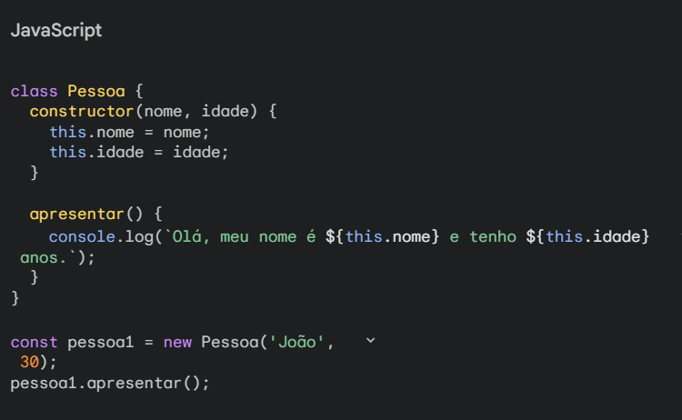

JavaScript: A Linguagem que Faz a Web Interagir
Conheça um pouco sobre esta linguagem de desenvolvimento
O que é JavaScript?
JavaScript é uma linguagem de programação que permite criar páginas web mais dinâmicas e interativas. Imagine um site que responde aos seus cliques, mostra animações legais ou até mesmo te permite jogar um jogo simples. Tudo isso é possível graças ao JavaScript!

Para que serve?
Criar interfaces interativas: Botões que fazem coisas, menus que se abrem e fecham, formulários que validam seus dados. Animar elementos: Criar efeitos visuais como transições suaves, slides e animações mais complexas. Manipular o conteúdo de uma página: Alterar o texto, as imagens ou a estrutura de uma página web de forma dinâmica. Criar jogos simples: Desenvolver jogos diretamente no navegador, utilizando a física e a lógica da programação. Construir aplicativos web: Criar aplicativos completos que rodam diretamente no navegador, como aplicativos de e-mail ou ferramentas de edição de fotos.

Como funciona?
O JavaScript é inserido diretamente no código HTML de uma página web. Quando você carrega uma página com JavaScript, o navegador interpreta esse código e executa as instruções, tornando a página mais viva e interativa.
Por que aprender JavaScript?
É muito utilizado: A maioria dos sites modernos utiliza JavaScript para criar experiências mais ricas para os usuários. É versátil: Você pode criar desde pequenas animações até grandes aplicativos web. É fácil de aprender: A sintaxe do JavaScript é relativamente simples e existem muitos recursos disponíveis para aprender. Abre portas para outras tecnologias: O conhecimento em JavaScript é fundamental para quem quer se aprofundar em outras áreas do desenvolvimento web, como React, Angular e Node.js.
Conclusão
JavaScript é uma ferramenta poderosa para criar páginas web mais dinâmicas e interativas. Com um pouco de prática, você será capaz de criar experiências incríveis para os usuários da web.